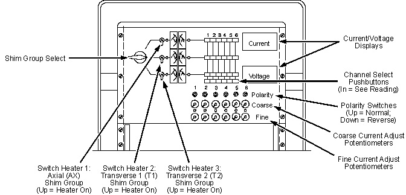
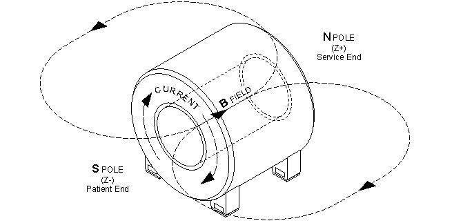
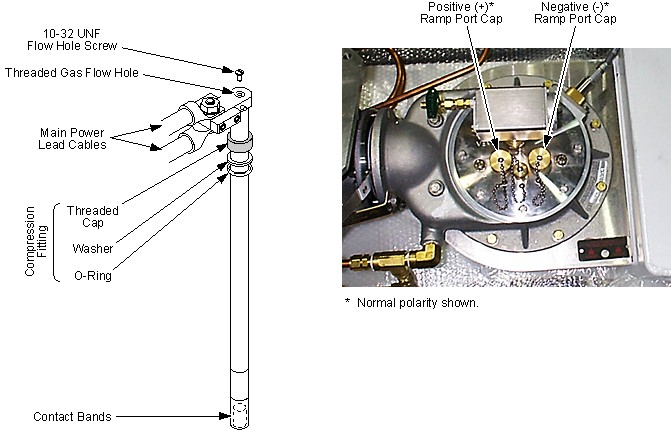

Operating Documentation
Direction 5440000, Rev# 5
Signa HDxt Service Methods
Module Version 5.0, Version Date 2/9/10
Operating Documentation |
| Required Persons | Preliminary Reqs | Procedure | Finalization |
|---|---|---|---|
| 2 | Included in Procedure | 4 hours | Included in Procedure |
The operational field strength for a MR750 Magnet is 30,000 gauss, ±26.0 gauss (127.72 MHz, ±110 kHz). If the magnetic field is out of range after performing LVShim, field adjustment is required.
| Item | Qty | Effectivity | Part# | Manufacturer | |
|---|---|---|---|---|---|
| 3.0T Warning Sign & Label Kit | 1 | - | 2379494 | - | |
| Portable Oxygen Monitor | 1/person | - | 2287000 | - | |
| Cryogen Safety Wear Kit | 1 kit/person | - | 46-271137G1 | - | |
| Nonabsorbent Protective Clothing (long sleeve shirt and pants) | 1 set/person | - | - | - | |
| Nonferrous Safety Shoes | 1 pr./person | - | - | - | |
| Brass Master Padlock with Brass Shackle | 1 | - | 46-194427P320 | - | |
| Brass Master Transition Padlock | 1 | - | 2387081 | - | |
| Black & White on Red Lockout Tag | 1 pkg. of 25 | - | 46-194427P322 | - | |
| Transition LOTO Tag | 1 | - | 46-194427P313 | - | |
| Line Cord Plug Cover, Plugs ≤3 in. wide by ≤ 5.875 in. long (76 mm by 149 mm), Cords ≤1.25 in. (31 mm) diameter | 1 | - | 46-194427P321 | - | |
| 750 Amp TCR 7.5T750 Main Power Supply 46-260776G3 or 1,000 Amp ESS 7.5-1000-2-D-1236 Main Power Supply 46-260776G4 | - | 46-260776G3 or 46-260776G4 | - | ||
| Shim Power Supply | 1 | - | 46-260777G3 | - | |
| 750 Amp Ramp Cable Kit 2135435 or 1,000 Amp Ramp Cable Kit with Ground 2353394 | 1 | - | 2135435 or 2353394 | - | |
| Shim Cable Kit (if not already ordered with the magnet) | 1 | - | 2135558 | - | |
| MetroLab Teslameter Kit | 1 kit | - | 46-251865G4 | - | |
| No. 6 MetroLab Probe (included in MetroLab Teslameter Kit 46-251865G4) | 1 | - | 2295525-5 | - | |
| Digital Voltmeter (DVM) | 1 | - | - | - | |
| Ammeter | 1 | - | - | - | |
| Titanium Tool Kit: Basic Set 5113258, Installation Set 5112581, or other nonferromagnetic tools (magnets with magnetic fields >1.5T) | 1 | - | 5113258 or 5112581 | - | |
| HDx Service Platform - Can use Universal Service Ladder/Platform 2319156 if service space ≥30 in. (762 mm) | 1 | - | 5155291 or 2319156 | - | |
| Cardboard Box or nonferromagnetic frame | 1 | - | - | - | |
| Service Methods documentation for the magnet/enclosures (available through the Common Documentation Library at www.gehealthcare.com or your local GE Healthcare Service Representative) | 1 | - | - | - | |
| ||||
| Potential Fatal Injury! | ||||
| before and while performing the Field Adjustment after Shimming procedure: | ||||
|
| ||||
| Potential Fatal Injury! | ||||
| before starting the Field Adjustment after Shimming procedure: | ||||
| Have all Work Assistants or Observers comply with the Buddy System Requirements & Certification subsection of “2301164PRE MR Magnet Safety Requirements.” |
| ||||
| Asphyxiation Hazard! | ||||
| The Field Adjustment after Shimming Procedure generates odorless, colorless helium gas that displaces oxygen in the air. | ||||
| Make sure magnet room vent exhaust fan is on before starting the Field Adjustment after Shimming procedure. |
| ||||
| Potential Quench Hazard! | ||||
| The magnet may quench, rapidly releasing cryogenic gases, if its liquid helium level drops too low during the Field Adjustment after Shimming procedure. | ||||
| Make sure the magnet ≥90% full of liquid helium before starting the Field Adjustment after Shimming procedure. |
| ||||
| Potential Quench Hazard! | ||||
| Applying power through the Shim Lead before the Shim Lead is sufficiently cooled or while the Shim Lead's Vent Valve is closed may result in a magnet quench. | ||||
| Make sure the Shim Lead's Nupro Vent Valve is open and frosting is visible on the Shim Lead Housing before turning on the Shim Coil Power Supply. |
| ||||
| Electrical Shock Hazard! | ||||
| Connecting the Main Lead Extensions while the Main Power Supply is on will create a rapid electrical discharge of 100 volts or more. | ||||
| Make sure input power to the Main Power Supply is disconnected when connecting the Main Lead Extensions. |
| ||||
| Electrical Shock Hazard! | ||||
| Touching both Main Lead Extensions at the same time or allowing them to contact each other while the magnet is at field will result in a rapid discharge through their contact points if the Switch Heater is activated or circuit resistance develops at that moment. | ||||
| Do not touch both Main Lead Extensions at the same time. Do not allow the Main Lead Extensions to contact each other. |
| ||||
| Potential Cold Burn Hazard! | ||||
| Exposure to Cryogens and contact with cold objects is possible during the Field Adjustment after Shimming procedure. | ||||
| Wear protective clothing, nonabsorbent gloves and goggles when performing the Field Adjustment after Shimming procedure. |
| ||||
| Electrical Shock Hazard! | ||||
| Contact with connectors leading to an energized power supply can cause electrical shock. | ||||
| Follow OSHA Lockout/Tagout (loto) procedures while making electrical connections to a main power supply or a shim power supply. See . |
| Condition | Reference | Effectivity |
|---|---|---|
Make sure the area is secure and that ALL required Warning Signs are posted to meet the safety requirements stated in the following document before starting the Field Adjustment after Shimming procedure. | - | |
Removal of some magnet enclosure components may be required to complete the Field Adjustment after Shimming procedure. Refer to the appropriate document that follows and to the Service Methods documentation (available through the Common Documentation Library at www.gehealthcare.com or your local GE Healthcare Service Representative) before continuing if cover removal is required. | - | |
(continued) | - | |
Make sure the Shim Power Supply is calibrated in conformance with the vendor manual (46-294439P7) and that the heater currents are set to Transverse 1 = 610 mA, ±5 mA, Transverse 2 = 610 mA, ±5 mA and Axial = 710 mA, ±10 mA. | - | - |
Make sure the liquid helium level is ≥90% before starting the Field Adjustment after Shimming procedure. | - | |
The Shim Lead must be engaged, precooled and frosted in conformance with the following document before entering shim currents. | - | |
Make sure the Magnet Room exhaust fan is on and operational and the Magnet Room door is propped open before starting the Field Adjustment after Shimming procedure. | - | - |
Top fill the magnet to >90% helium level in conformance with Liquid Helium Fill before continuing with the Field Adjustment after Shimming procedure.
Replace the Main Lead Extension's Contact Bands in conformance with Main Lead Extension Contact Band Replacement.
| ||||
| Potential Magnet Quench! | ||||
| The magnet may quench if the Nupro Valve on the Shim Lead is closed or the Shim Lead is not cold. | ||||
| Make sure the Nupro Valve is fully open and the valve is frosted before slowly engaging the Shim Lead. Do not remove the Shim Lead's Orifice Cap that controls helium gas flow. Always engage/disengage the Shim Lead in conformance with “Shim Lead Engagement and Disengagement.” |
Make sure the Shim Lead Assembly is engaged in conformance with Shim Lead Engagement and Disengagement.
Set up a Teslameter and No. 6 Probe for single point field measurement in conformance with Preparations for Field Measurement and make sure the probe is at the physical center (R = 0, Z = 0) of the magnet.
Make sure the Main and Shim Power Supplies are checked and adjusted in conformance with the vendor manuals supplied with each unit.
| NOTE: | Refer to the vendor manuals for power supply control locations and descriptions. |
Make sure the Shim Lead Vent Valve is open and frost is present on the Shim Lead Connector Housing before removing shim currents.
| ||||
| Electrical Shock Hazard! | ||||
| Contact with connectors leading to an energized power supply can cause electrical shock. | ||||
| Follow loto procedures while making electrical connections to a main power supply or a shim power supply. |
Disconnect and LOTO input power to both the Main and Shim Coil Power Supplies. Verify that no voltage is present by using a DVM or equivalent measuring device.
Measure the present Base Frequency of the magnet's magnetic field and from this, subtract the desired Center Frequency to calculate the Delta Frequency.
Base Freqency - Center Frequency = Delta Frequency
Delta Frequency = ______________________ Hz
Connect the Shim Power Supply to the magnet in conformance to the Shim Coil Power Supply Connections subsection of Shimming.
Remove LOTO and connect input power to the Shim Coil Power Supply.
Switch on main power to the Shim Power Supply.
Set the Shim Group Select Switch to the appropriate group (T1, T2, and Axial). It is recommended that the Transverse Coils be ramped down first, then the Axial Coils.
Illustration 1: Shim Power Supply Controls (Front Panel)

Dial into the Shim Power Supply all last recorded Shim Currents from SC Shimming Data. Make sure the shim current polarities are correct.
Turn on the appropriate Switch Heater (T1, T2 or Axial) on the Shim Power Supply.
Verify that the heater currents are set to Transverse 1 = 610 mA, ±5 mA; Transverse 2 = 610 mA, ± 5 mA; and Axial = 710 mA, ± 10 mA.
If any current level is not correct, adjust the corresponding T1, T2 or AX Switch Heater Adjustment Screw on the rear of the Shim Power Supply.
Allow five (5) minutes for the Switch Heater to drive the switches resistive.
Slowly adjust the Current Controls for the appropriate shim group (T1, T2 or Axial) to zero.
Turn off the appropriate Switch Heater (T1, T2 or Axial).
Turn off main power to the Shim Power Supply.
Disconnect the heater cable from Shim Power Supply.
| ||||
| Electrical Shock Hazard! | ||||
| Contact with connectors leading to an energized power supply can cause electrical shock. | ||||
| Follow loto procedures while making electrical connections to the shim power supply. |
Disconnect and LOTO input power to the Shim Coil Power Supply. Verify that no voltage is present by using a DVM or equivalent measuring device.
| ||||
| Electrical Shock Hazard! | ||||
| Contact with connectors leading to an energized power supply can cause electrical shock. | ||||
| Follow loto procedures while making electrical connections to the Main power supply. |
Disconnect and LOTO input power to the Main Power Supply. Verify that no voltage is present by using a DVM or equivalent measuring device.
If resistance checks were not previously performed on the ramping circuit, connect the Main Power Supply and Main Lead Extensions to the magnet in conformance with Connections for Ramping and Shimming.
Make sure all power supply Heater Switches are set to off or O. (See the two illustrations below.)
Illustration 2: 750 Amp TCR 7.5T750 S/C Main Coil Service Power Supply Cabinet

Illustration 3: 1,000 Amp ESS7.5-1000-2-D-1236 S/C Main Coil Service Power Supply Cabinet

Set the Current and Voltage Adjustment Controls on the Main Power Supply to zero (fully CCW).
Remove LOTO and connect input power to the Main Power Supply.
| ||||
| Potential Magnet Quench! | ||||
| Turning on the Main Heater Switch while performing these resistance checks will cause a magnet quench. | ||||
| Make sure the Main Heater Switch stays OFF during resistance checks. |
Turn on the Main Power Supply's Input Power Switches. (There are duplicate Main Power and Power On switches on the front and back of the Main Power Supply.)
Make sure the Main Heater Switch is off, then turn on the Axial Shim Heaters.
Observe the current rise in the Main Power Supply Ammeter (710 mA, ±10 mA) to verify circuit continuity.
If the heater current is not correct, adjust it with the Current Adjustment control on the rear of the Power Supply.
Connect a Digital Voltmeter (DVM) to the end of the Voltage Sense Leads.
Set the power supply Voltmeter Toggle Switch to the MAIN COIL position.
Set the Current Adjustment Coarse Control on the power supply to maximum (fully CW).
Observe the Main Power Supply's Ammeter, and slowly turn the Voltage Adjustment Control CW to set a 375 amp current through the Main Leads, Main Lead Extensions, and persistent Main Switch.
Record the voltage reading on the DVM in Magnet Ramping and Parking Current Log.
| ||||
| Potential Magnet Quench | ||||
| Voltage readings >100 millivolts (mV) at 375 amps indicate unacceptable internal contact resistance at the Main Lead Extensions. Higher resistances will add more heat to the magnet, increasing boil-off and possibly causing a quench during ramping. | ||||
| Make sure the voltage readings are ≤100 mV at 375 Amps. |
If the DVM voltage is >100 mV, perform one or more of the following to reduce contact resistance:
Wait approximately one minute with current running, readings may drop as the Main Lead Extensions cool.
Tighten the nuts (one flat at a time) on top of the Hold-Down Tool while measuring DVM readings.
If the reading still exceeds 100 mV:
Turn the Voltage and Current Adjustment controls to zero (fully CCW).
| ||||
| Electrical Shock Hazard! | ||||
| Contact with connectors leading to an energized power supply can cause electrical shock. | ||||
| Follow loto procedures while making electrical connections to any power supply. |
Turn off the Main Power Supply input power, and disconnect and LOTO input power to the Main Power Supply. Verify that no voltage is present by using a DVM or equivalent measuring device.
Check and tighten the bolts securing the Ramp Cables to the Power Supply and Main Leads Extensions.
Lift and reseat the Main Leads.
Remove LOTO and reconnect input power to the Power Supply.
Repeatedly failing the contact resistance check may indicate one of the following:
Main Lead Extension Contact Bands replaced as directed in Connections for Ramping and Shimming are not performing correctly and need replacing in conformance with Main Lead Extension Contact Band Replacement.
Main Leads are damaged and need replacing.
| ||||
| Do NOT continue to the next step until after the DVM voltage is <100 mV. | ||||
Set the power supply's Voltmeter Select Switch to the MAIN POWER SUPPLY position so the voltmeter will display the power supply output to the output lugs. If the voltage exceeds 2.2 V at 375 amps during the test, repeat Step 13.
| NOTE: | A voltage less than 2.2 V at 375 amps indicates acceptable system resistance. |
Turn the Current and Voltage Adjustment Controls to zero (fully CCW), and continue to the next section.
| ||||
| Potential Quench Hazard! | ||||
| Incorrect connection polarity and power supply current settings can cause the magnet's Main Coils to quench and can burn up the power supply when turning on the Main Switch. | ||||
| Make sure the connection polarity and power supply current settings are the same as last recorded in Magnet Ramping and Parking Current Log. |
| ||||
| Potential Quench Hazard! | ||||
| If the Axial Shim Heater Switch is not ON during the entire Main Field Adjustment process, a magnet quench can occur and irreparable damage Shim Coil damage can be done. The power supply will not pass current to the Main Lead Extensions with the Axial Shim Heater off. | ||||
| Make sure the Axial Shim Heater Switch remains ON during this Field Adjustment after Shimming procedure. |
| ||||
| Potential Quench Hazard! | ||||
| The magnet may quench if the Main Power Supply experiences large output fluctuations and/or excessive ripple. | ||||
| Make sure the Main Power Supply is routinely calibrated at an approved facility. |
| ||||
| If a Quench occurs during change of magnetic field, immediately turn the Voltage and Current Adjustment Controls to zero. | ||||
Retrieve the last recorded Main Coil Connection Polarity from Magnet Ramping and Parking Current Log.
Center Frequency will change by about 359 kHz per amp of change in Main Coil current.
Main field will have either increased or decreased by the amount recorded in Removing Transverse and Axial Shim Currents, Step 8. For example, a Delta Frequency of +64 kHz indicates the Main Field is too high and will have to be decreased by this amount.
Illustration 4: Magnet Polarity Ramped Normal

Make sure the Axial Shim Heater is on, and the Main Leads are connected with the polarity retrieved in Step 1.
Set the power supply's Voltmeter Select Switch to the MAIN COIL position. (See Illustration 2 or Illustration 3.)
Set the power supply's Current Adjustment Control to maximum (fully CW).
Adjust the power supply's Voltage Adjustment Control to the Parking Current value retrieved in Step 1.
Turn on the Main Switch Heater.
Make sure the Axial Shim Switch Heater power supply is on, and left on throughout the Main Field Adjustment procedure.
Allow approximately three (3) minutes for the Main Switch to go resistive.
When the Main Switch is resistive, slowly adjust the Voltage Adjustment Control until the measured main magnet field Base Frequency matches the desired Center Frequency. This will counter the Delta Frequency calculated in Removing Transverse and Axial Shim Currents, Step 8.
| NOTE: | For example, where the calculated Delta Frequency calculated is +64 kHz, the main magnet field Base Frequency needs a -64 kHz adjustment to match the desired Center Frequency. |
Allow six (6) minutes for field to stabilize, then turn Off the Main Switch Heater.
Wait a minimum of 15 minutes for the switch to fully cool and go persistent, then record the current value at which the switch went persistent in Magnet Ramping and Parking Current Log.
When the switch goes persistent, slowly turn the power supply's Voltage Adjustment Control to zero (fully CCW) over a two-minute period.
Only the last two digits of the Teslameter reading should change while the Voltage Adjustment Control is turned to zero.
Any larger decrease in the Teslameter reading indicates the Main Coil Switch is not persistent, and the Voltage Adjustment Control must be slowly returned to the magnet's parking field.
Turn off the Axial Shim Heater.
Gradually turn the Current Adjustment Controls to zero (fully CCW) over a one-minute period.
Turn the Main Power Supply off.
| ||||
| Electrical Shock Hazard! | ||||
| Contact with connectors leading to an energized power supply can cause electrical shock. | ||||
| Follow loto procedures while making electrical connections to the Main power supply. |
Disconnect and LOTO input power to the Main Power Supply. Verify that no voltage is present by using a DVM or equivalent measuring device.
| ||||
| Potential Magnet Quench! | ||||
| Improper engagement/disengagement of the Main Lead Extensions with the Main Lead Pins can cause a ramped magnet to quench. | ||||
| Insert Main Lead Extensions one at a time and allow them to cool sufficiently (a fog or water vapor forms around the Lead Extensions) before they contact the Main Lead Pins. |
| ||||
| Electrical shock hazard! | ||||
| Touching both Main Lead Extensions at the same time or allowing them to contact each other while the magnet is at field will result in a rapid discharge through their contact points if the Switch Heater is activated or circuit resistance develops at that moment. | ||||
| Do not touch both Main Lead Extensions at the same time. Do not allow the Main Lead Extensions to contact each other. |
| ||||
| Electrical shock hazard! | ||||
| Do not allow exposed body areas to come in contact with the cryostat or plumbing while inserting or extracting the Main Lead Extensions. |
| ||||
| Potential Cold Burn Hazard | ||||
| Contact with cold objects is possible during the Field Adjustment after Shimming procedure. | ||||
| Wear nonabsorbent leather gloves with no holes or tears during insertion or extraction of the Main Lead Extensions. |
| ||||
| Follow the next step precisely to avoid an excessive heat load being applied to the magnet cartridge and a possible quench following a magnet ramp. | ||||
After parking the magnet, disconnect and LOTO input power to the Main Power Supply. Verify that no voltage is present by using a DVM or equivalent measuring device. Plug and remove one Main Extension at a time in the following sequence:
Open Valve V2, and bleed vessel pressure down below 1.0 psig. (Do not allow pressure to go below 0.5 psig as read on the magnet pressure gauge or Magnet Monitor.) Close V2.
Remove all ice around the Ramp Lead Port Compression Fitting on the Main Lead Extension that is being removed first. (See the illustration below.)
Illustration 5: Main Lead Extension and Ramp Ports

| ||||
| Potential Magnet Quench! | ||||
| Plugging the flow hole of an engaged Main Lead Extension will cause the magnet to quench. | ||||
| Do not insert flow hole screws into Main Lead Extensions until after extensions are removed. |
Unscrew the Ramp Lead Port Compression Fitting, and remove the first Main Lead Extension from the magnet. Immediately replace the cap onto the Ramp Lead Port.
Remove all ice around the Ramp Lead Port Compression Fitting on the other Main Lead Extension.
Unscrew the Ramp Lead Port Compression Fitting, and remove the second Main Lead Extension from the magnet. Immediately replace the cap onto the Ramp Lead Port.
Install the flow hole screws in the flow hole of both Main Lead Extensions after both leads are removed.
Check the Main Leads and fill port cap for leaks.
| ||||
| Potential Magnet Quench! | ||||
| The magnet may quench if the Nupro Valve on the Shim Lead is closed or the Shim Lead is not cold. | ||||
| Make sure the Nupro Valve is fully open and the valve is frosted before slowly engaging the Shim Lead. Do not remove the Shim Lead's Orifice Cap that controls helium gas flow. Always engage/disengage the Shim Lead in conformance with “Shim Lead Engagement and Disengagement.” |
| ||||
Before turning on the Shim Coil Power Supply and applying shim
currents, make sure the following conditions exist to prevent irreparable
damage to the vapor-cooled Shim Leads:
| ||||
Make sure the Shim Lead Assembly is engaged in conformance with Shim Lead Engagement and Disengagement.
| NOTE: | To frost the Shim Lead, open the Shim Lead Vent Valve. Do not remove the Shim Lead's calibrated orifice. |
Remove LOTO and reconnect the Shim Power Supply to the magnet in conformance to Connections for Ramping and Shimming. Verify that the Shim Lead Vent Valve is open and the Lead is sufficiently cooled.
Switch on the main power to the Shim Power Supply.
Input shim currents for one group at a time in the following order:
Transverse 1 Coils
Transverse 2 Coils)
Axial Coils
Repeat the following steps for each group in sequence:
Set the Shim Group Select Switch to the appropriate group (T1, T2 or Axial). See Illustration 1 and the table below.
Table 1: S/C Shim Groups
| Transverse 1 Shim Group | Transverse 2 Shim Group | Axial Shim Group | |
|---|---|---|---|
| Course/Fine Adjustment Potentiometer & Polarity Light/Switch | Setting for Shim Group Select Switch | ||
| Middle | Bottom | Top | |
| Coil (Circuit) | Coil (Circuit) | Coil (Circuit) | |
| 1 | T1-1 (ZX2Y2) | T2-1 (ZXY) | AX1 (Z1) |
| 2 | T1-2 (X) | T2-2 (Y) | AX2 (Z2) |
| 3 | T1-3 (Z2X) | T2-3 (Z2Y) | AX3 (Z3) |
| 4 | T1-4 (ZX) | T2-4 (ZY) | AX4 (Z4) |
| 5 | T1-5 (X2Y2) | T2-5 (XY) | AX5* (Z5)* |
| 6 | T1-6 (X3)* | T2-6 (Y3)* | AX6 (Z6)* |
| * Not applicable to W0 Series LCC300 magnets. | |||
| ||||
| When the Switch Heaters are turned on, any existing currents in the Shim Coils will be discharged into the Power Supply. To prevent dumping excessive currents through the Shim Leads, match the existing shim currents with the power supply before turning on the heaters. The current then can be adjusted to the required new levels after the heaters are activated. | ||||
Dial into the Power Supply the last recorded shim currents and polarities from SC Shimming Data. Make sure the shim current polarities are correct.
Make sure the Shim Lead Extension is frosted, then turn on the appropriate Switch Heater.
Verify that the T1, T2 and Axial heater currents are within range (T1: 610 mA, ±5 mA; T2: 610 mA, ±5 mA; Axial: 710 mA, ±10 mA). Use the Adjustment Screw on the rear of the Shim Power Supply to make sure the current is within range.
Allow five (5) minutes for the heater to drive the Switches resistive.
After all the Correction Coil currents are set, make sure each power supply is delivering the appropriate amount of current at the correct polarity.
Check the Teslameter's frequency reading to make sure the Correction Coils are stable (i.e., no more than a 20 Hz change in the total magnetic field over a two-minute period).
Once the field is stable in the above step, turn off the Switch Heater and allow the heater to cool for 15 minutes.
Turn the Shim Power Supply back down to zero amps (fully CCW).
Disconnect all cables between the magnet and Shim Power Supply.
| ||||
| Make sure the Shim Lead Vent Valve and Ramp Lead Port Caps are closed, sealed and do not leak to prevent gaseous helium loss and/or frost and ice formation in the Vertical Penetration. | ||||
Close the Shim Lead's Nupro Vent Valve.
Turn off input power to the Shim Power Supply, and disconnect and LOTO all power supply cables. Verify that no voltage is present by using a DVM or equivalent measuring device.
Check the magnet's helium level, and add liquid helium in conformance with Liquid Helium Fill if the level is <75%.